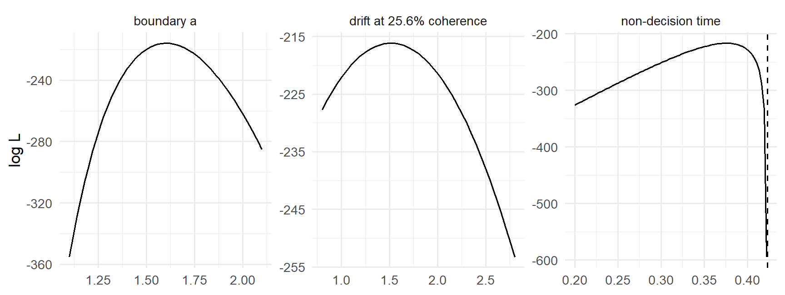

5 Fitting The Model
This chapter fits the DDM to one participant's data by maximum likelihood: finding the parameter values under which the observed responses and RTs are most probable.
5.1 The Data For One Participant
We start with participant P01's accuracy blocks: 300 trials, 100 at each coherence level, half with leftward and half with rightward motion. The upper boundary is the response "right".
rdm <- read_csv("data/rdm.csv", show_col_types = FALSE)
p01 <- rdm |>
filter(participant == "P01", instruction == "accuracy") |>
mutate(upper = response == "right")
p01 |> count(coherence, direction)| coherence | direction | n |
|---|---|---|
| 0.064 | left | 50 |
| 0.064 | right | 50 |
| 0.128 | left | 50 |
| 0.128 | right | 50 |
| 0.256 | left | 50 |
| 0.256 | right | 50 |
5.2 The Model For These Data
The drift depends on how strong the motion is and which way it goes. The model has one drift strength for each coherence level, and the direction sets its sign:
\[ v_i = \begin{cases} +v_c & \text{if the motion on trial } i \text{ is rightward} \\ -v_c & \text{if it is leftward} \end{cases} \]
where \(c\) is the trial's coherence. Boundary separation \(a\), starting point \(z\) and non-decision time \(T_{er}\) are the same on every trial. That gives six parameters: \(a\), \(z\), \(T_{er}\), \(v_{6.4}\), \(v_{12.8}\) and \(v_{25.6}\).
5.3 The Likelihood Of The Data
Trials are assumed to be independent given the parameters, so the likelihood of the data is the product of the trial densities from Chapter 4, and the log-likelihood is the sum of their logs:
\[ \log L(\boldsymbol\theta) = \sum_{i=1}^{N} \log f_{r_i}\!\left(\text{RT}_i - T_{er} \mid v_i, a, z\right) \]
\(r_i\) is trial \(i\)'s response (which boundary) and \(v_i\) its drift.
Code. The drift for each trial is built as a vector, and ddm_density() does the
rest:
make_drift <- function(v_by_coherence, coherence, direction) {
strength <- v_by_coherence[match(coherence, c(0.064, 0.128, 0.256))]
ifelse(direction == "right", strength, -strength)
}
loglik_rdm <- function(a, z, t0, v_by_coherence, data) {
v <- make_drift(v_by_coherence, data$coherence, data$direction)
sum(log(ddm_density(data$rt, data$upper, v, a, z, t0)))
}
loglik_rdm(a = 1.5, z = 0.5, t0 = 0.3, v_by_coherence = c(0.5, 1, 1.5), data = p01)## [1] -2615.4 Picturing The Likelihood
Holding five parameters fixed and varying the sixth shows the log-likelihood rising to a peak. Fitting finds the peak in all six dimensions at once.
# Values to hold the other parameters at (close to the peak)
a_fix <- 1.55; z_fix <- 0.53; t0_fix <- 0.37; v_fix <- c(0.45, 0.87, 1.7)
profiles <- bind_rows(
tibble(parameter = "drift at 25.6% coherence", value = seq(0.8, 2.8, 0.05)) |>
mutate(logL = map_dbl(value, \(x) loglik_rdm(a_fix, z_fix, t0_fix, c(v_fix[1:2], x), p01))),
tibble(parameter = "boundary a", value = seq(1.1, 2.1, 0.02)) |>
mutate(logL = map_dbl(value, \(x) loglik_rdm(x, z_fix, t0_fix, v_fix, p01))),
tibble(parameter = "non-decision time", value = seq(0.2, min(p01$rt) - 0.001, length.out = 80)) |>
mutate(logL = map_dbl(value, \(x) loglik_rdm(a_fix, z_fix, x, v_fix, p01)))
)
ggplot(profiles, aes(x = value, y = logL)) +
geom_line() +
geom_vline(data = tibble(parameter = "non-decision time", value = min(p01$rt)),
aes(xintercept = value), linetype = "dashed") +
facet_wrap(~ parameter, scales = "free") +
labs(x = NULL, y = "log L")
In the right-hand panel, as \(T_{er}\) approaches the fastest RT (dashed line), that trial's decision time approaches zero, its density falls to zero, and \(\log L\) falls without limit. A single very fast response, such as an anticipation, therefore sets an upper limit on \(T_{er}\) for the whole dataset. Fast outliers need to be removed before fitting or included in the model (Chapter 10).
5.5 Transforming The Parameters
The parameters have limits: \(a > 0\), \(0 < z < 1\) and \(0 < T_{er} < \min(\text{RT})\). The optimiser works on transformed values that have no limits, and the likelihood function converts them back:
| Parameter | Limits | Value the optimiser works with |
|---|---|---|
| \(a\) | above 0 | \(\log a\) |
| \(z\) | between 0 and 1 | \(\text{logit}\, z\) |
| \(T_{er}\) | between 0 and the fastest RT | \(\text{logit}(T_{er} / \min \text{RT})\) |
| \(v_c\) | none | \(v_c\) |
In MATLAB the same limits could be set as bounds in fmincon. Transforming them allows
an unconstrained optimiser to be used instead.
5.6 Fitting From Several Starting Points
\(a\), \(v\) and \(T_{er}\) partly trade off against each other, so the log-likelihood surface has long, flat ridges and a single starting point can stop short of the peak. The function below starts from several points and keeps the best result.
fit_rdm <- function(data, n_starts = 5) {
min_rt <- min(data$rt)
starts <- cbind(c(log(1.5), 0, 0, 0.5, 1, 1.5),
replicate(n_starts - 1, c(log(runif(1, 0.8, 2.5)), rnorm(1, 0, 0.3),
rnorm(1, 0, 1), runif(3, 0, 2))))
fits <- apply(starts, 2, function(s)
optim(s, neg_loglik_u, data = data, method = "BFGS", control = list(maxit = 1000)))
best <- fits[[which.min(sapply(fits, `[[`, "value"))]]
list(u = best$par, par = to_natural(best$par, min_rt), logLik = -best$value,
converged = best$convergence == 0)
}
set.seed(1)
fit_p01 <- fit_rdm(p01)
round(fit_p01$par, 3)## a z t0 v_064 v_128 v_256
## 1.581 0.528 0.371 0.394 0.589 1.5485.7 Comparing With The True Values
Because the data were simulated, we know the values they were generated with. The drift strengths were \(k \times\) coherence, with a different \(k\) for each participant.
truth <- read_csv("data/rdm_truth.csv", show_col_types = FALSE)
t01 <- truth |> filter(participant == "P01")
true_p01 <- c(a = t01$a_accuracy, z = t01$z, t0 = t01$t0,
v_064 = t01$k * 0.064, v_128 = t01$k * 0.128, v_256 = t01$k * 0.256)
tibble(parameter = names(true_p01), true = true_p01, estimate = fit_p01$par)| parameter | true | estimate |
|---|---|---|
| a | 1.554 | 1.581 |
| z | 0.532 | 0.528 |
| t0 | 0.372 | 0.371 |
| v_064 | 0.435 | 0.394 |
| v_128 | 0.870 | 0.589 |
| v_256 | 1.739 | 1.548 |
The estimates are close to the true values, but not identical: 300 trials carry only so much information. The next section puts a number on that.
5.8 Standard Errors
The curvature of the log-likelihood at its peak shows how precisely the data determine each parameter. A sharp peak means a precise estimate. The inverse of the Hessian of \(-\log L\) (its matrix of second derivatives) approximates the covariance matrix of the estimates:
\[ \widehat{\text{Cov}}(\hat{\mathbf u}) \approx H^{-1}, \qquad H_{jk} = \frac{\partial^2 \left(-\log L\right)}{\partial u_j\, \partial u_k}\bigg|_{\hat{\mathbf u}} \]
The Hessian is calculated for the transformed parameters. The delta method converts the standard errors back: each is multiplied by the derivative of its back-transformation.
H <- optimHess(fit_p01$u, neg_loglik_u, data = p01)
se_u <- sqrt(diag(solve(H)))
p <- fit_p01$par
min_rt <- min(p01$rt)
deriv <- c(p[["a"]], p[["z"]] * (1 - p[["z"]]), p[["t0"]] * (1 - p[["t0"]] / min_rt), 1, 1, 1)
tibble(parameter = names(p), true = true_p01, estimate = p, se = deriv * se_u)| parameter | true | estimate | se |
|---|---|---|---|
| a | 1.554 | 1.581 | 0.048 |
| z | 0.532 | 0.528 | 0.016 |
| t0 | 0.372 | 0.371 | 0.009 |
| v_064 | 0.435 | 0.394 | 0.134 |
| v_128 | 0.870 | 0.589 | 0.131 |
| v_256 | 1.739 | 1.548 | 0.154 |
Here 5 of the 6 true values lie within two standard errors of their estimates. That is about what to expect: an interval of two standard errors either side of an estimate misses the true value about one time in twenty, so with six parameters an occasional miss, by a little more than two standard errors, is not unusual.
The correlations between the estimates show which parameters trade off:
C <- cov2cor(solve(H))
dimnames(C) <- list(names(p), names(p))
round(C, 2) # correlations of the transformed parameters## a z t0 v_064 v_128 v_256
## a 1.00 0.08 -0.61 0.06 0.10 0.19
## z 0.08 1.00 -0.02 0.01 0.01 0.02
## t0 -0.61 -0.02 1.00 -0.01 -0.02 0.01
## v_064 0.06 0.01 -0.01 1.00 0.01 0.02
## v_128 0.10 0.01 -0.02 0.01 1.00 0.03
## v_256 0.19 0.02 0.01 0.02 0.03 1.00